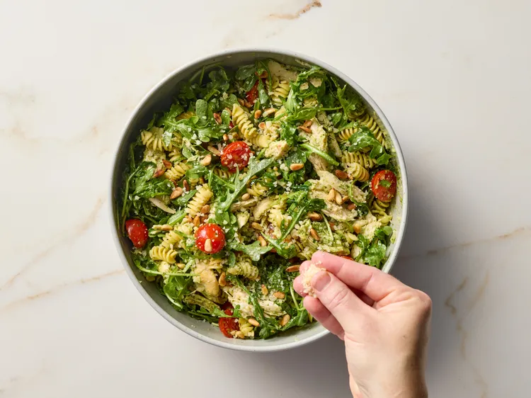

Pesto Chicken Pasta Salad

Credit: Jake Sternquist / Food Styling: Holly Dreesman, Shannon Goforth / Prop Styling: Breanna Ghazali
Description
This pesto chicken pasta salad features a tangy pesto dressing, fresh juicy tomatoes, peppery arugula, chicken, cheese, and toasty pine nuts. Perfect for potlucks, picnics, or as a side at your next BBQ.This pesto chicken pasta salad features a tangy pesto dressing, fresh juicy tomatoes, peppery arugula, chicken, cheese, and toasty pine nuts. Perfect for potlucks, picnics, or as a side at your next BBQ.
Ingredients
- 8 ounces rotini pasta
- 1 (6-8 ounce) jar purchased basil pesto
- 1/4 cup red wine vinegar
- 2 cloves garlic, minced
- 1/4 teaspoon salt
- 3 cups chopped cooked chicken
- 3 cups baby arugula or coarsely chopped baby spinach
- 2 cups cherry tomatoes, halved
- 2 ounces Parmigiano-Reggiano cheese, shaved, divided
- 1/4 cup pine nuts, toasted, divided
Steps
- Gather all ingredients.
- Cook rotini according to package directions. Drain and rinse well under cold water; set aside.
- Stir together pesto, vinegar, garlic, and salt in a large bowl.
- Add chicken, cooked rotini, arugula, tomatoes, half of the cheese, and half of the pine nuts. Toss well. Serve at once or cover and chill up to 6 hours.
- Top with remaining cheese and pine nuts before serving.
Home